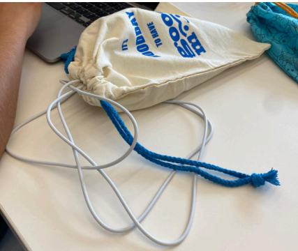
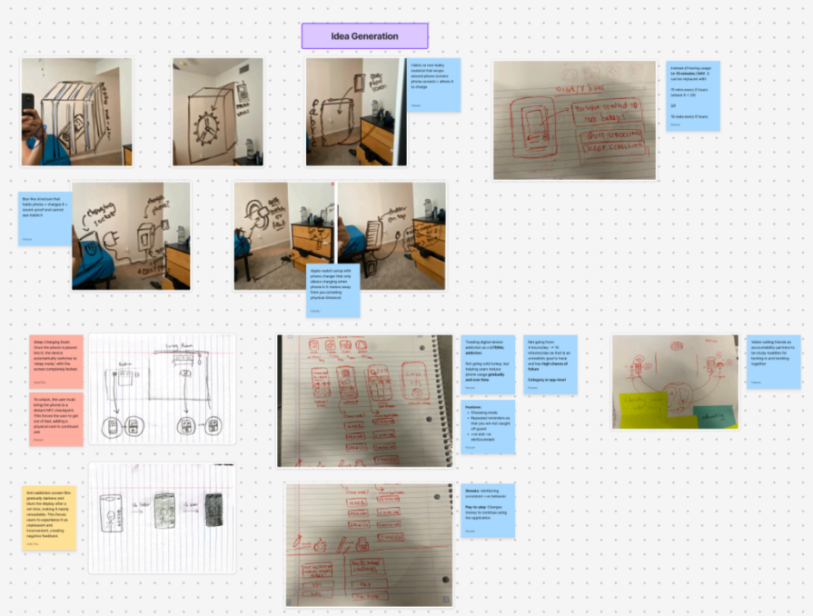
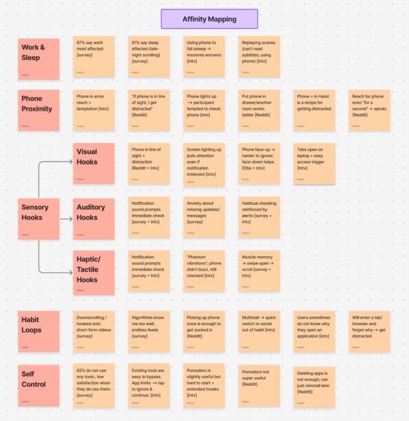

Digital distractions pose a barrier to the uninterrupted attention that many tasks (work, study) require. Our aim was to prototype an intervention to assist in mitigating digital distractions for graduate students and young professionals. To do this, we leveraged primary and secondary research methods and used iterative design processes. The final ideas were evaluated using a scoring matrix.
We settled on a final intervention in the form of a charging sleeve. A user would place their phone into a fabric sleeve which allows for the phone to be charged. The sleeve hides the screen, including any notifications.

The final prototype for this project, using a cloth bag.

A screenshot from Figma showing some of the products of the ideation phase.

Another Figma screenshot showing some of the themes found during affinity diagramming.